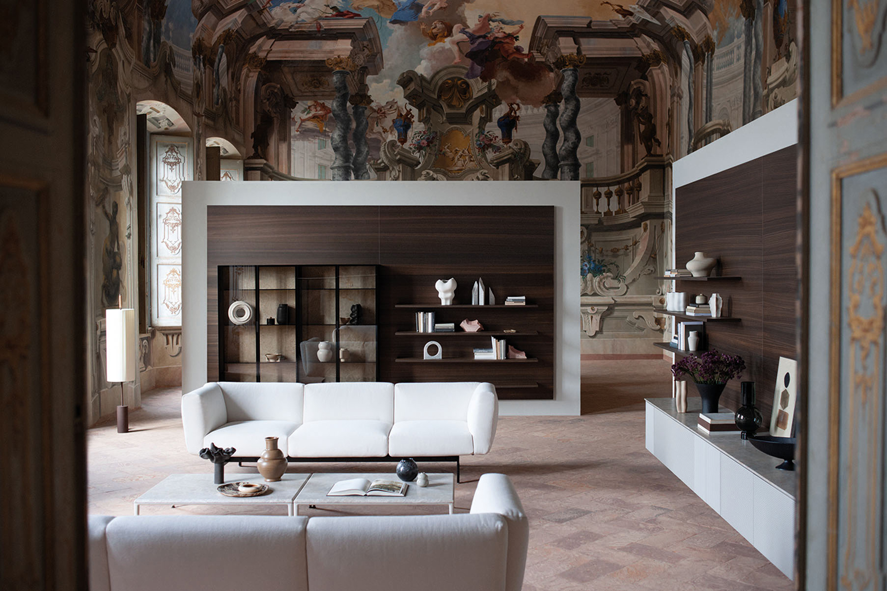
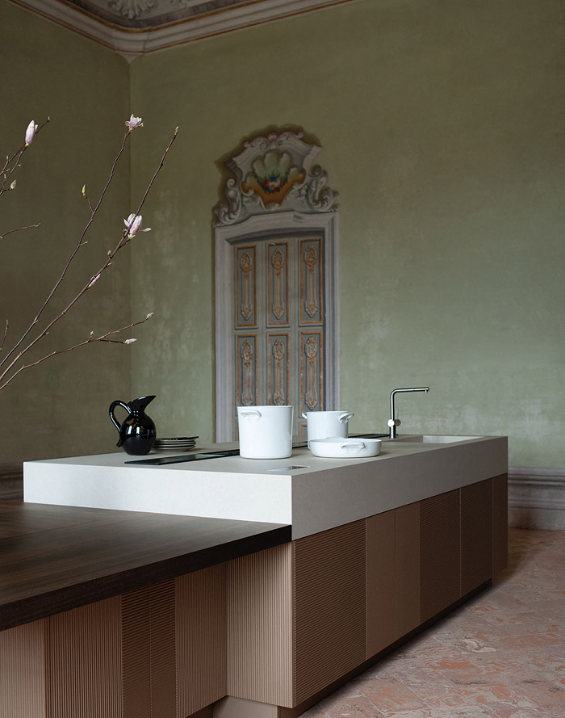
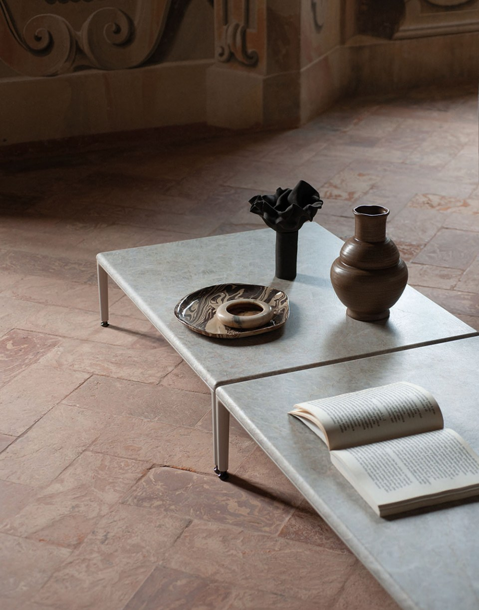
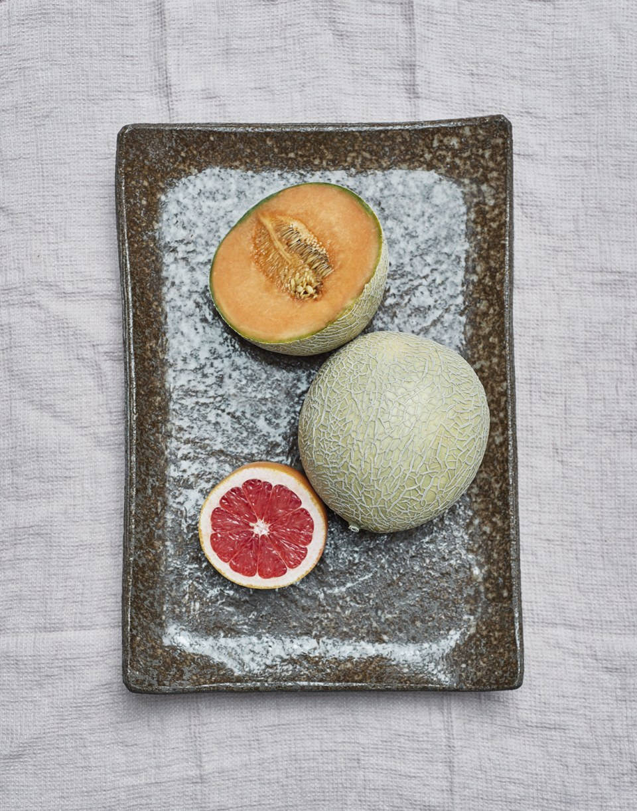

Intarsio
Design by Garcia Cumini
Intarsio — коллекция, вдохновлённая техникой инкрустации: деревянные дверцы с контрастными вставками создают ритмичный орнамент, который превращает фасад в самостоятельный художественный объект. Название отсылает к итальянской традиции intarsio — искусству вкладного декора из различных пород дерева.
Сочетание текстур — тёплого дерева, матового лака и мрамора Verde Guatemala — выстраивает диалог между природным и рукотворным. Каждая комбинация материалов рождает уникальный образ, сохраняя при этом архитектурную строгость системы.
Коллекция создана студией Garcia Cumini в русле философии Slow Design: вместо тенденций — вечные решения, вместо эффектных жестов — глубина и точность каждой детали.


Отступить от правил — значит произвести наибольшее впечатление. Я люблю симметрию, но не конвенцию. Я ценю порядок, но ищу в нём место для неожиданного. Именно в этом напряжении между структурой и свободой рождается то, что запоминается надолго. Intarsio создана дизайнерами Garcia Cumini — дуэтом, который соединяет испанскую экспрессию и итальянскую школу. Инкрустированный фасад здесь — это не орнамент ради орнамента, а осознанный архитектурный жест: каждый элемент занимает своё место, каждый материал несёт смысл. Кухня, которая не просто функционирует, но рассказывает историю.


Art & Order
Каждая эмоция, каждая мысль, каждый момент уникальны и требуют своего пространства. Intarsio организует это пространство с точностью и поэзией.
Контраст фактур и ритм инкрустации создают интерьер, в котором красота и функция существуют как единое целое. Я отдаюсь эмоциям, окружая себя произведениями искусства — единственным способом мгновенно вырваться из логики, управляющей нашей жизнью.